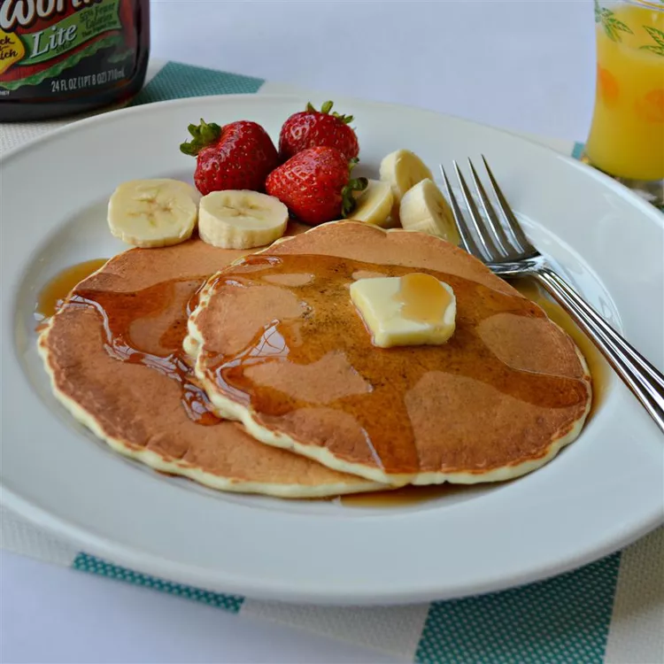

Grandad's Pancakes

These waffles turn out lovely and crispy. Perfect for any day of the week!
Ingredients
- 1 cup all-purpose flour
- ¼ cup white sugar
- 1 tablespoon baking powder
- 2¼ teaspoon salt
- 1 cup milk, at room temperature
- 1 egg, at room temperature
- 1 tablespoon oil
- 2 teaspoons oil, or as needed
Steps
- Combine flour, sugar, baking powder, and salt in a bowl; make a 'well' in the center of the flour mixture. Pour milk, egg, and 1 tablespoon oil into the well. Mix until well moistened.
- Place a griddle over medium-high heat; sprinkle a few drops of water onto the griddle. If the droplets bounce, the griddle is ready; add 2 teaspoons oil.
- Spoon batter onto the griddle; cook until bubbles form and the edges are dry, 3 to 5 minutes. Flip and cook until browned on the other side, 3 to 5 more minutes. Repeat with remaining batter.
Home